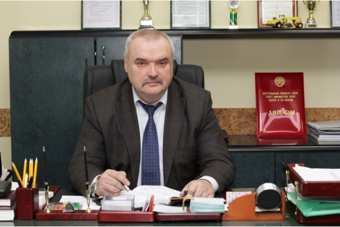
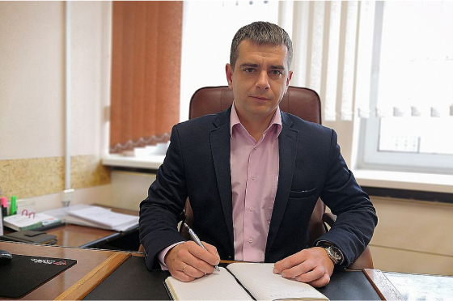
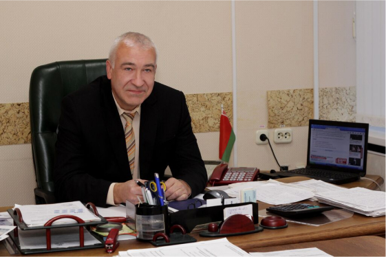
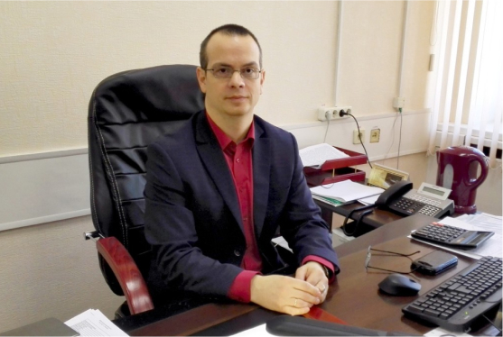
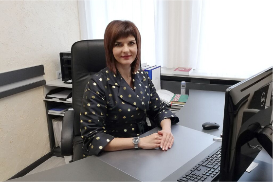

Генеральный директор
Капцевич Олег Вадимович
«Ганаровы дарожнiк Беларусi» I и II степени,
Почетная грамота Министерства транспорта
и коммуникаций Республики Беларусь
+375 212 66-38-13

Главный инженер
Клебанов Сергей Николаевич
«Ганаровы дарожнiк Беларусi» II степени,
Почетная грамота Министерства транспорта
и коммуникаций Республики Беларусь
+375 212 66-91-19

Заместитель генерального директора по строительству
Старотиторов Владимир Александрович
+375 212 67-33-52

Заместитель генерального директора по экономике
Булай Сергей Владимирович
«Ганаровы дарожнiк Беларусi» II степени
+375 212 67-20-86

| Должность | ФИО | Служебный телефон | Дни и часы приема по личным вопросам | Место приема |
| Генеральный директор | Капцевич Олег Вадимович | 66-38-13 | 2-ой и 4-ый четверг месяца с 14.00 до 17.00 | ул. Суворова, 16, г. Витебск, 2 этаж |
| Главный инженер | Клебанов Сергей Николаевич | 66-91-19 | 1-ый и 3-ий вторник месяца с 14.00 до 17.00 | ул. Суворова, 16, г. Витебск, 2 этаж |
| Заместитель генерального директора по строительству | Старотиторов Владимир Александрович | 67-33-52 | Понедельник с 14.00 до 17.00 | ул. Суворова, 16, г. Витебск, 2 этаж |
| Заместитель генерального директора по экономике | Булай Сергей Владимирович | 67-20-86 | Среда с 14.00 до 17.00 | ул. Суворова, 16, г. Витебск, 2 этаж |
Личный прием руководством ОАО «ДСТ-1, г.Витебск» осуществляется с учетом компетенции должностных лиц, а также принципа первоначального рассмотрения обращения нижестоящим должностным лицом.
При временном отсутствии в день личного приема руководителя организации личный прием проводит лицо, исполняющее его обязанности.
Если на день личного приема приходится государственный праздник или праздничный день, объявленный Президентом Республики Беларусь нерабочим, день личного приема переносится на следующий за ним рабочий день.